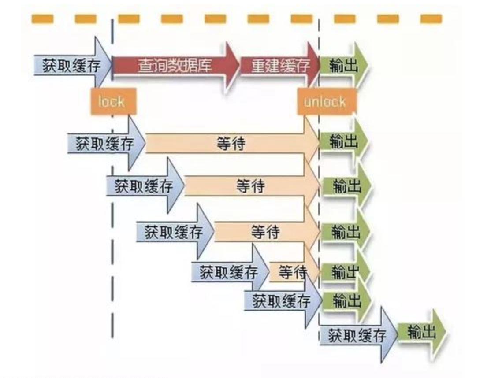

[TOC]
缓存
| 单词短语 | 解释 |
|---|---|
| penetration | n. 穿透; 渗透; 进入; 插入 |
| avalanche | n. 雪崩; 山崩; |
3 major problems and solutions in the cache world
缓存的使用
In most Internet applications:
- When the business system initiates a certain query request, it first determines whether the data exists in the cache;
- If there is a cache, return the data directly;
- If the cache does not exist, query the database again and return the data.
业务查询 =》 判断缓存命中 =》 直接返回数据结果
否则： 查询数据库并更新缓存，然后返回数据结果
- 缓存分担部分请求压力
- 但缓存不可能把所有的数据都缓存起来(需要有过期时间和删除策略）
缓存穿透
什么是缓存穿透（cache penetration）
缓存穿透是说：收到一个请求，但是该请求在缓存中不存在，只能去数据库中查询，然后再放进缓存。但当有好多请求同时访问同一个数据时，业务系统把这些请求全发到了数据库；或者恶意构造一个逻辑上不存在的数据，然后大量发送这个请求，这样每次都会被发送到数据库去处理，最终导致数据库挂掉。
即：请求的数据在缓存大量不命中，导致请求都走数据库。缓存穿透如果发生了，也可能把我们的数据库搞垮，导致整个服务瘫痪！
Why does cache penetration occur?（如何产生？）
There are many reasons for cache penetration, which are generally as follows:
Malicious attacks deliberately create a large amount of non-existent data to request our services. Since these data do not exist in the cache, massive requests fall into the database, which may cause the database to crash.
Code logic error. This is the programmer’s pot, nothing to say, must be avoided in development!
| 单词短语 | 解释 |
|---|---|
| malicious | adj.恶意的，有敌意的； 蓄意的； 预谋的； 存心不良的 |
| attack | vt.& vi.攻击，进攻，抨击；n.攻击； 抨击；（队员等的）进攻；（疾病）侵袭；vt.抨击； 非难； 侵袭； 损害 |
| deliberate | adj.故意的； 蓄意的； 深思熟虑的； 慎重的；vt.权衡；vi.熟虑； 商讨； |
| pot | n.罐； 一罐； （某种用途的）容器； 陶盆 锅；vt.把…栽入盆中； 种盆栽； 台球、普尔和斯诺克击（球）入袋； 射杀; vi.随手射击； |
The hazard of cache penetration(缓存穿透的危害)
If there are massive data that does not exist in the query request, then these massive requests will fall into the database, and the database pressure will increase dramatically, which may lead to system crash. (You have to know that the most vulnerable in the current business system is IO, a little bit It will collapse under pressure, so we have to think of ways to protect it).
| 单词短语 | 解释 |
|---|---|
| hazard | vt.冒险； 使遭受危险；n.危险； 冒险的事； 机会； 双骰子游戏 |
| massive | adj.大的，重的； 大块的，大量的； 魁伟的，结实的； 大规模的 |
| fall into | 分成； 掉进，陷入； 堕入； 陷于 |
| dramatically | adv.戏剧性地，引人注目地； 显著地，剧烈地； |
| vulnerable | adj.（地方）易受攻击的； 易受伤的； 易受批评的； [桥牌]已成局的 |
| collapse | vi.折叠； 倒塌； 崩溃； （尤指工作劳累后）坐下; vt.使倒塌； 使坍塌； 使瓦解；n.垮台； （身体的）衰弱； |
如何解决缓存穿透
当我们从数据库找不到的时候，我们也将这个空对象设置到缓存里边去。下次再请求的时候，就可以从缓存里边获取了。一般会将空对象设置一个较短的过期时间。
由于请求的参数是不合法的(每次都请求不存在的参数)，于是我们可以使用布隆过滤器(BloomFilter)或者压缩filter提前拦截，不合法就不让这个请求到数据库层！
解决1:缓存空对象(Cache empty data)（缺点）
- 指标不治本(空数据对象本身缓存也是有过期时间的)
- 大量空值会占用缓存内存
解决2:BloomFilter
It needs to add a barrier（n.障碍； 屏障； 栅栏； 分界线vt.把…关入栅栏； 用栅栏围住；） before the cache, which ；stores all the keys that exist in the current database.
将数据库中所有的查询条件，放入布隆过滤器中；当一个查询请求过来时，先经过布隆过滤器进行查，如果判断请求查询值存在，则继续查；如果判断请求查询不存在，则直接丢弃。
- 低并发,定时任务去每天更新bloomFilter,维护每天的一个bloomFilter
- 初始预热，动态新增
BloomFilter的缺点
存在误判(当一个布隆过滤器判断一个数据在集合中存在时，有一定的可能性误判;不存在的则100%正确)。如果bloom filter中存储的是黑名单，那么可以通过建立一个白名单来存储可能会误判的元素
删除困难。一个放入容器的元素映射到bit数组的k个位置上是1，删除的时候不能简单的直接置为0，可能会影响其他元素的判断。可以采用
Counting Bloom Filter
Counting Bloom Filter:将标准Bloom Filter位数组的每一位扩展为一个小的计数器（Counter），在插入元素时给对应的k（k为哈希函数个数）个Counter的值分别加1，删除元素时给对应的k个Counter的值分别减1。Counting Bloom Filter通过多占用几倍的存储空间的代价，给Bloom Filter增加了删除操作
缓存雪崩（cache avalanche）
缓存雪崩的概念
If the cache goes down for some reason, the massive query request that was originally blocked by the cache will flock to the database like a mad dog. At this point, if the database can’t withstand this huge pressure, it will collapse. This is the cache avalanche.
| 单词短语 | 解释 |
|---|---|
| go down | 停止； 被接受； 沉下； 被打败 |
| flock to | 成群结队地走向…； |
| mad | adj.疯狂的； 猛烈的； 着迷的； 〔口语〕愤怒的，生气的；vt.使疯狂； |
| withstand | vt.经受，承受，禁得起； 反抗；vi.反抗； 耐得住，禁得起； |
- Redis挂掉了，请求全部都走数据库了
- 对缓存数据设置相同的过期时间，导致某段时间内缓存全部都失效，请求全部走数据库了
缓存雪崩如果发生了，很可能就把我们的数据库搞垮，导致整个服务瘫痪！
如何解决
对于“对缓存数据设置相同的过期时间，导致某段时间内缓存失效，请求全部走数据库。”这种情况，非常好解决：
- 解决方法：在缓存的时候给过期时间加上一个随机值，这样就会大幅度的减少缓存在同一时间过期。
对于“Redis挂掉了，请求全部走数据库”这种情况，我们可以有以下的思路：
Using a Cache Cluster to Ensure High Availability of Caches
- 事发前：实现Redis的高可用(主从架构+Sentinel 或者Redis Cluster)，尽量避免Redis挂掉这种情况发生。
Using Hystrix（限流）
Hystrix is an open source “anti-avalanche tool” that reduces losses after avalanches by blowing, degrading, and limiting currents.
| 单词短语 | 解释 |
|---|---|
| anti | n.& adj.反对者，反对论者反对的；抵抗 |
| losses | n.损失( loss的名词复数 )； 损耗； 失败； 降低 |
| degrade | vt.降低，贬低； 使降级； 降低…身份； 使丢脸；vt.& vi.（使）退化，降解，分解； 降解； 撤职，免职； 降低品格[身价，价值（等）] |
- 事发中：万一Redis真的挂了，我们可以设置本地缓存(ehcache)+限流(hystrix)，尽量避免我们的数据库被干掉(起码能保证我们的服务还是能正常工作的)
事后恢复缓存
- 事发后：redis持久化，重启后自动从磁盘上加载数据，快速恢复缓存数据。
Hotspot data set is invalid (热点数据集失效)
What is the hotspot data set failure?
We usually set an expiration time for the cache. After the expiration time, the database will be deleted directly by the cache, thus ensuring the real-time performance of the data to a certain extent.
However, for some hot data with very high requests, once the valid time has passed, there will be a large number of requests falling on the database at this moment, which may cause the database to crash. The process is as follows:
If a hotspot data fails, then when there is a query request [req-1] for the data again, it will go to the database query. However, from the time the request is sent to the database to the time the data is updated into the cache, since the data is still not in the cache, the query request arriving during this time will fall on the database, which will cause the database Enormous pressure. In addition, when these request queries are completed, the cache is updated repeatedly.
解决方法
- 设置热点数据永远不过期；设置不同的过期时间
- 使用互斥锁
业界比较常用的做法，是使用mutex。简单地来说，就是在缓存失效的时候，不是立即去load db，而是先使用缓存工具的某些带成功操作返回值的操作（比如Redis的SETNX或者Memcache的ADD）去set一个mutex key，当操作返回成功时，再进行load db的操作并回设缓存；否则，就重试整个get缓存的方法。
public String get(key) {
String value = redis.get(key);
if (value == null) { //代表缓存值过期
//设置3min的超时，防止del操作失败的时候，下次缓存过期一直不能load db
if (redis.setnx(key_mutex, 1, 3 * 60) == 1) { //代表设置成功
value = db.get(key);
redis.set(key, value, expire_secs);
redis.del(key_mutex);
} else { //这个时候代表同时候的其他线程已经load db并回设到缓存了，这时候重试获取缓存值即可
sleep(50);
get(key); //重试
}
}
return value;
}
We can use the lock mechanism that comes with the cache. When the first database query request is initiated, the data in the cache will be locked; at this time, other query requests that arrive at the cache will not be able to query the field, and thus will be blocked waiting; After a request completes the database query and caches the data update value, the lock is released; at this time, other blocked query requests can be directly retrieved from the cache.
When a hotspot data fails, only the first database query request is sent to the database, and all other query requests are blocked, thus protecting the database. However, due to the use of a mutex, other requests will block waiting and the throughput of the system will drop. This needs to be combined with actual business considerations to allow this. （当出现热点数据失效时，只有第一个请求会发送到数据库，其它的请求都会被阻塞，这样能保护数据库；当然，由于使用了mutex，其它的请求会被阻塞而进行等待，这会降低系统的吞吐率。这需要与实际的业务考虑相结合。）
- 第一个获取到锁，当更新或者从数据库获取完成后再释放锁，其它的请求只需要牺牲一定的等待时间，即可直接从缓存中继续获取数据。

Mutex locks can avoid the problem of database corruption caused by the failure of ahotspot data. In actual business, there are often scenes where a batch of hotspot data fails at the same time. So how do you prevent database overload for this scenario?
| 单词短语 | 解释 |
|---|---|
| corruption | n.腐败； 贪污； 贿赂； 变体 |
| scenario | n.设想； 可能发生的情况； 剧情梗概； |
Facebook's Memcached Multiget Hole: More Machines != More Capacity(无底洞问题)
Facebook’s Memcached Multiget Hole: More machines != More Capacity
用一句通俗的话总结：更多的机器不代表更多的性能，所谓“无底洞”就是说投入越多不一定产出越多。
产生原因
键值数据库或者缓存系统，由于通常采用hash函数将key映射到对应的实例，造成key的分布与业务无关，但是由于数据量、访问量的需求，需要使用分布式后（无论是客户端一致性哈性、redis-cluster、codis），批量操作比如批量获取多个key(例如redis的mget操作)，通常需要从不同实例获取key值，相比于单机批量操作只涉及到一次网络操作，分布式批量操作会涉及到多次网络io。
eg:一次mget操作，需要从多个缓存实例去获取数据，这包含了多次网络；如果mget的key都在一个实例中，那么就只要一次网络操作
危害（更多的机器不代表更多的性能）
客户端一次批量操作会涉及多次网络操作，也就意味着批量操作会随着实例的增多，耗时会不断增大。
服务端网络连接次数变多，对实例的性能也有一定影响。
hash的两种方式
| 分布方式 | 特点 | 典型产品 |
|---|---|---|
| 哈希分布 | 1.数据分散度高,2.键值分布与业务无关,3.无法顺序访问,4.支持批量操作 | 一致性哈希memcacheredisCluster其他缓存产品 |
| 顺序分布 | 1.数据分散度易倾斜,2.键值分布与业务相关,3.可以顺序访问,4.支持批量操作 | BigTableHbase |
针对性的优化
命令本身的效率：例如sql优化，命令优化
网络次数：减少通信次数
降低接入成本:长连/连接池,NIO等。
IO访问合并:O(n)到O(1)过程:批量接口(mget)
批量操作的一些方案
| 方案 | 优点 | 缺点 | 网络IO |
|---|---|---|---|
| 串行mget | 1.编程简单2.少量keys，性能满足要求 | 大量keys请求延迟严重 | O(keys) |
| 串行IO | 1.编程简单2.少量节点，性能满足要求 | 大量node延迟严重 | O(nodes) |
| 并行IO | 1.利用并行特性2.延迟取决于最慢的节点 | 1.编程复杂2.超时定位较难 | O(max_slow(node)) |
| hash tags | 性能最高 | 1.tag-key业务维护成本较高2.tag分布容易出现数据倾斜 | O(1) |
如何保证缓存与数据库双写时一致的问题
Cache Aside Pattern
Load data on demand into a cache from a data store. This can improve performance and also helps to maintain consistency between data held in the cache and data in the underlying data store.
Applications should implement a strategy that helps to ensure that the data in the cache is as up-to-date as possible, but can also detect and handle situations that arise when the data in the cache has become stale.
stale 英[steɪl] 美[steɪl]
adj. 不新鲜的; (空气) 污浊的; (烟味) 难闻的; 陈腐的; 没有新意的; 老掉牙的;
n. （牛马、骆驼的） 尿;
缓存/数据库更新
- 给缓存设置过期时间，是保证最终一致性的解决方案; 理解如下
对存入缓存的数据设置过期时间，所有的写操作以数据库为准，对缓存操作只是尽最大努力即可。也就是说如果数据库写成功，缓存更新失败，那么只要到达过期时间，则后面的读请求自然会从数据库中读取新值然后回填缓存
先更新数据库，再更新缓存
--------------------------------------->时间线
线程A更新了数据库 线程A更新了缓存
线程B更新了数据库 线程B更新了缓存
请求A更新缓存应该比请求B更新缓存早才对，但是因为网络等原因，B却比A更早更新了缓存了，导致脏数据
先删除缓存，再更新数据库，下一次读操作会更新缓存(删除缓存方案1)
--------------------------------------->时间线
先删除缓存 再更新数据库 下一次读操作会更新缓存
读操作
设置缓存
读脏
读脏
先更新数据库，再删除缓存，下一次读操作会更新缓存(删除缓存方案2)
--------------------------------------->时间线
先更新数据库 再删除缓存 下一次读操作会更新缓存
读操作(且缓存失效）
读老数据库 更新缓存（更新的是旧的数据库数据）
这个条件需要发生在读缓存时缓存失效，而且有一个并发的写操作。实际上数据库的写操作会比读操作慢得多，而且还要加锁，而读操作必需在写操作前进入数据库操作，又要晚于写操作更新缓存，所有这些条件都具备的概率并不大。但是为了避免这种极端情况造成脏数据所产生的影响，我们还是要为缓存设置过期时间。